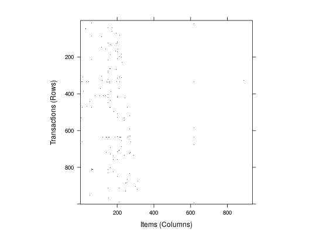

Provides the S4 methods image to generate level plots to visually
inspect binary incidence matrices, i.e., objects based on
itemMatrix (e.g., transactions, tidLists, items in
itemsets or rhs/lhs in rules). These plots can be used to identify problems
in a data set (e.g., recording problems with some transactions containing all
items).
# S4 method for itemMatrix
image(x,
xlab = "Items (Columns)",
ylab = "Elements (Rows)", ...)
# S4 method for transactions
image(x,
xlab = "Items (Columns)",
ylab = "Transactions (Rows)", ...)
# S4 method for tidLists
image(x,
xlab="Transactions (Columns)",
ylab="Items/itemsets (Rows)", ...)
itemMatrix, transactions or
tidLists). image in
package Matrix which in turn are passed on to
levelplot in lattice.image (for dgTMatrix in Matrix),
levelplot (in lattice),
itemMatrix-class,
transactions-class,
tidLists-class
data("Epub") ## in this data set we can see that not all ## items were available from the beginning. image(Epub[1:1000])